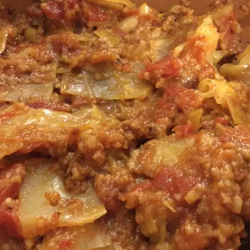

Cabbage Roll Casserole
My cabbage roll casserole has all the ingredients of stuffed cabbage rolls but is a lot easier to make! This basic recipe will appeal to everyone but if you prefer more flavor, consider adding crushed garlic, paprika, thyme, or cayenne pepper.

| Prep Time: |
Cook Time: |
Total Time: |
Serving: |
| 20 mins |
1 hrs 20 mins |
1 hrs 40 mins |
12 |
Ingredients
- 2 pounds ground beef
- 3 and half pounds chopped cabbage
- 1 (29 ounce) can tomato sauce
- 1 cup chopped onion
- 1 cup uncooked white rice
- 1 teaspoon salt
- 2 cans beef broth
Steps
-
Preheat Oven:
Preheat the oven to 350 degrees F (175 degrees C).
-
Cook ground beef:
Heat a large skillet over medium-high heat. Cook and stir ground beef in the hot skillet until browned and crumbly, 5 to 7 minutes. Drain and discard grease.
-
Mix everything:
Combine cabbage, tomato sauce, onion, rice, and salt in a large mixing bowl. Stir in cooked ground beef. Pour mixture into a 9x13-inch baking dish, then pour beef broth over top.
-
Bake:
Cover and bake in the preheated oven for 1 hour. Stir, re-cover, and bake until cabbage is tender and rice is done, 20 to 30 minutes more.